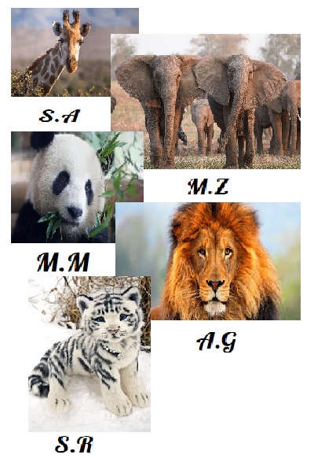

 Este Proyecto fue realizado por un grupo de 5 animales del colegio Liceo Doston del grado décimo, con el fin de informar como animales viven el virus que se propaga por todo el mundo, pues estos también se ven afectados y consientisar a la raza humana de que se deben cuidar. Por otro lado, trabajaremos diferentes áreas del saber para así cumplir con los propósitos establecidos con la institución para este trabajo.
¿Cómo realizamos este proyecto?
Al tener conocimiento de la decisión tomada por el colegio sobre crear un proyecto y ya nosotros como grupo empezamos a buscar temas que nos llamaran la atención, tuvimos un tema en común que eran como los humanos no respetan a los animales así que decidimos hablar sobre el tráfico ilegal de animales, crear una página exclusivamente para informar, pero al mostrar nuestra idea al profesor de matemáticas L. C. el nos aconseja cambiarlo pues no contestaba la pregunta principal impuesta por el LD, buscamos también la opinión de nuestra profesora de francés Y. A. que apoyaba lo dicho por el profesor L.
Teniendo claro que teníamos que cambiar nuestro tema decidimos hablar igualmente de animales pero involucrándolos con nuestra situación actual, así como llegamos a animales en pandemia pero trabajando el maltrato que muchos animales domésticos viven día a día.